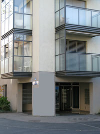
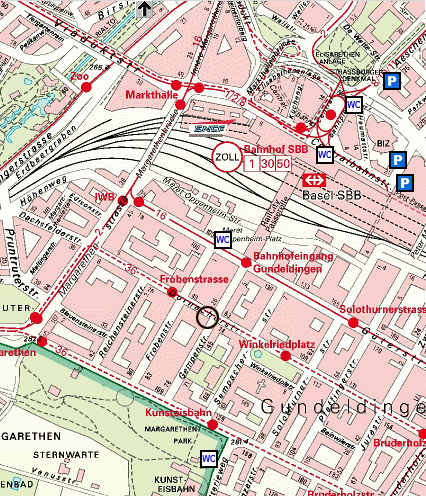

[% PROCESS _site.txt %]

[% META
	title = 'How to find us'
%]


			<div class="rubrik_left_big">
			<h3>[% template.title %]</h3>


              <p>&nbsp;</p>
		      <p align="center"></p>
		      <p><br />
		      </p>
		      <p>Questors Systems (Schweiz) HQ is easy to find being only 3 minutes from the rear-entrance of Basel SBB Hauptbannhof (Bahnhofeingang Gundeldingen, Güterstrasse).</p>

			  <p>&nbsp;</p>
              
				<p align="center"><iframe width="640" height="480" frameborder="0" scrolling="no" marginheight="0" marginwidth="0" src="http://maps.google.com/maps?f=q&amp;hl=en&amp;geocode=&amp;time=&amp;date=&amp;ttype=&amp;q=Gempenstrasse+46,+4053+Basel,+Switzerland&amp;sll=47.551274,7.587798&amp;sspn=0.009747,0.013433&amp;ie=UTF8&amp;om=1&amp;s=AARTsJr-uRN921pQoWDSXzJop1Qjt2hhmw&amp;ll=47.55139,7.590952&amp;spn=0.027806,0.054932&amp;z=14&amp;iwloc=addr&amp;output=embed"></iframe><br /><small><a href="http://maps.google.com/maps?f=q&amp;hl=en&amp;geocode=&amp;time=&amp;date=&amp;ttype=&amp;q=Gempenstrasse+46,+4053+Basel,+Switzerland&amp;sll=47.551274,7.587798&amp;sspn=0.009747,0.013433&amp;ie=UTF8&amp;om=1&amp;ll=47.55139,7.590952&amp;spn=0.027806,0.054932&amp;z=14&amp;iwloc=addr&amp;source=embed" style="color:#0000FF;text-align:left">View Larger Map</a></small>
				</p>

                <p>&nbsp;</p>
                <h4>By Plane</h4>
                <p>Fly to Basel-Mullhouse (BSL) <a href="http://www.euroairport.com/EN/accueil.php">EuroAirport</a>, and then take bus:<br />
                  Line 50: EuroAirport -> Bahnhof SBB (Basel railway station) <a href="http://www.efa-bvb.ch/bvbfahrplan/jahresfp/l50/ah_02050A_n07_B_00220.pdf">Timetable</a><br />
				  Line 50: Bahnhof SBB (Basel railway station) -> EuroAirport <a href="http://www.efa-bvb.ch/bvbfahrplan/jahresfp/l50/ah_02050A_n07_B_00220.pdf">Timetable</a><br />
                  Duration of bus-ride: 15 minutes, Cost: 5 CHF (there is also a EUR ticket machine)<br />
                  Now follow the directions by train.<br />
                  <p>Alternatively a taxi will currently cost you about 50 CHF (30 EUR, 20 GBP) and take 20 minutes. </p>
                </p>

              <p>&nbsp;</p>
              <h4>By Car (From France, Germany, Switzerland)</h4>
                <p>Exit motorway and follow signs to &quot;Basel Gundelindgen&quot;, or Gundeli for short. From the exit road of the motorway, turn right onto the one way system following the signs to Gundelindgen. Beware as there is a speeding camera at the next set of traffic lights! Keep below the 40KPH as we are sure you will. After this bear left, and keep in the left lane, and at the next set of traffic lights, turn hard left at the hairpin left turn still following the signs to Gundeli. At the next set of lights you will drive over a bridge over the railway tracks at Grosspeter (there is a bright yellow Opal Garage called Grosspeter on the left hand side). Watch out here as well, as the big yellow trams can catch you unawares. Keep straight on after the bridge, straight over a crossing and at the next set of traffic lights turn right. This is Dornacherstrasse (one-way), and Gempenstrasse 46 is right on this street on the left hand side, one block after a one block public garden on the left hand side (approximately 1,500 meters).<br />
                The total time should take no more than 7 minutes from leaving the motorway.<br />
                To help plan your journey to Questor Systems, try using <a href="http://www.viamichelin.com/viamichelin/gbr/dyn/controller/Driving_directions">Via Michelin</a><br />
				Note: There is a motorway tax in Switzerland that is 40 CHF per year. If you do not have this you will have to purchase on entry to Switzerland.
                </p>
              </p>

			  <p>&nbsp;</p>
              <h4>By Train</h4>
			    The Swiss SBB train station, the French SNCF station and the German Badischer station are all in the immediate vicinity.<p>
                Arrive at Basel SBB Hauptbahnhof <a href="http://fahrplan.sbb.ch/bin/query.exe/en?TO=Basel%20HB">SBB/CFF/FFS</a> and then leave the station by the rear side on Güterstr (Eingang Gundeldingen). Cross Gutterstrase with the Zebra-crossing, and you are already on Gempenstrasse. Simply follow to the next corner, and there on the opposite right Corner are our offices, Gempenstr. 46</p>


			<p>&nbsp;</p>
			<h4>By Tram</h4>
			   BVB (<a href="http://www.bvb.ch/">Basler Verkehrs-Betriebe</a>) operate the local tram service in the town of Basel. <a href="http://www.blt.ch/">BLT</a> operate the trams to and from Basel Land (countryside surrounding Basel town).</p>
			   The nearest trams to our offices are:<p>
			   <a href="http://www.bvb.ch/fp_l16.htm">Tram 16</a> - Halt: Bahnhofeingang Gundeldingen<p>
			   <a href="http://www.bvb.ch/fp_l2.htm">Tram 02</a> - Halt: Basel IWB (Industrielle Werke Basel)<p><br />


				<br />

				<h4>General Information</h4>
				<ul>
					<li><a href="http://www.basel.com/en/welcome.cfm?">Basel Tourism Office</a>
					<li><a href="http://www.basel.ch/en/tourism_leisure/basel_tourismus">Basel Tourism</a>
					<li><a href="http://en.wikipedia.org/wiki/Basel">Basel - Wikipedia</a>
					<li><a href="http://www.mybasel.ch/verkehr_stadtplan.cfm">Basel Street Map</a>
				</ul>
                
				<p align="center"></p>
				<p align="center"><a href="http://www.mybasel.ch/verkehr_stadtplan_karte.cfm?OID=Strassen,1009&Nummer=46&Zoom=1000&Type=regular&ZIparkhaeuser=1&ZItoiletten=1">
				MyBasel.ch Interactive Map</a></p>


                <p>&nbsp;  </p>
              <p>&nbsp;</p>
              <p>For more details on getting to our offices please do not hesitate to contact questor at <a href="mailto:info@[% site.company_url_short %]?subject=Contact Request - www.[% site.company_url_short %]">info@[% site.company_url_short %]</a></p>
				<p>&nbsp;</p>
				<p>&nbsp;</p>
